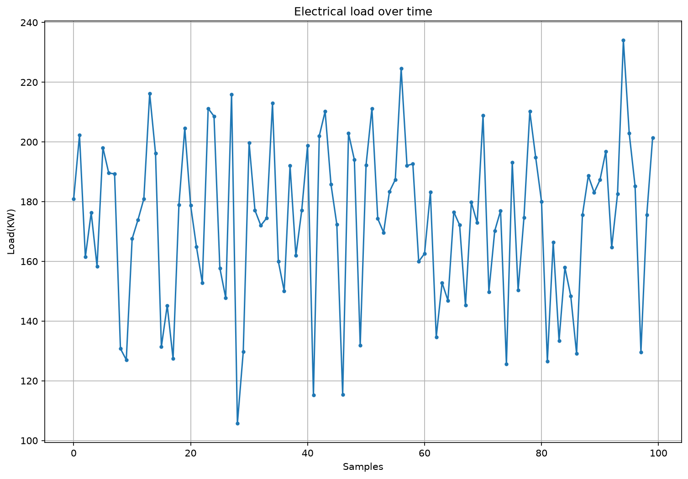
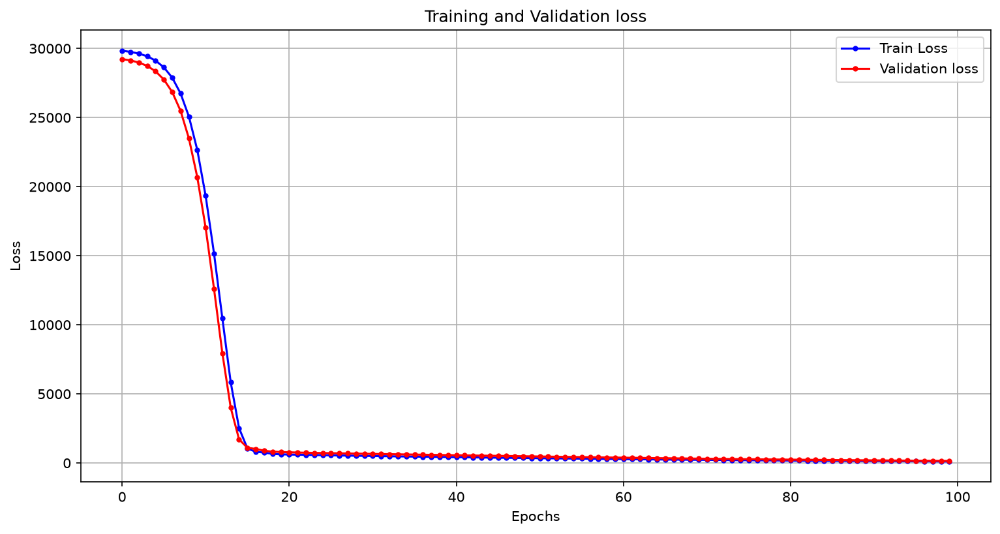
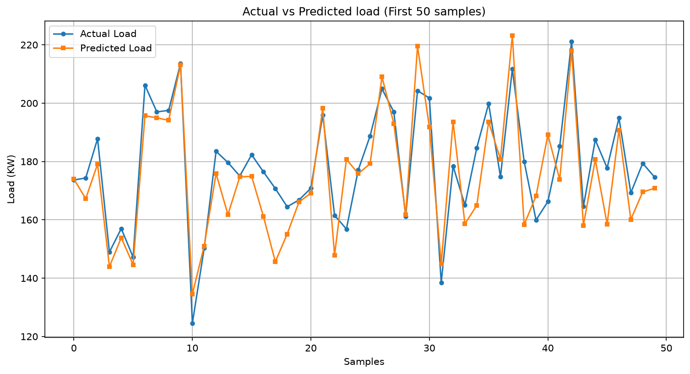

Keras Sequential model trained on 1,000 synthetic samples to predict electrical load from time, temperature, and historical data



| Feature | Type | Range | Description |
|---|---|---|---|
| Hours | Input | 0 — 23 | Hour of the day |
| Day | Input | 1 — 7 | Day of the week |
| Temperature | Input | 20 — 40 °C | Ambient temperature |
| Previous Load | Input | 100 — 200 KW | Historical load reading |
| Load | Target | ~80 — 250 KW | 0.6 × PrevLoad + 2 × Hours + 1.5 × Temp + 3 × Day + noise |